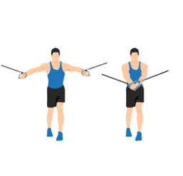

Prsne mišice
Treniranje prsnih mišic je ključnega pomena za celovit in uravnotežen trening ter ohranjanje zdravega telesa. Prsne mišice so pomembne za stabilnost zgornjega dela telesa in igrajo ključno vlogo pri vsakodnevnih aktivnostih, kot so dvigovanje predmetov, potiskanje in izvajanje gibalnih vzorcev. Treniranje prsnih mišic ne samo izboljšuje moč, temveč tudi povečuje mišično maso, definicijo in simetrijo prsnega predela.
- Poleg estetskih koristi ima treniranje prsnih mišic tudi številne funkcionalne prednosti. Močne prsne mišice prispevajo k boljši telesni drži in stabilnosti ramenskega obroča. Pravilno razvite prsne mišice lahko zmanjšajo tveganje za poškodbe in bolečine v zgornjem delu hrbta ter izboljšajo delovanje drugih mišičnih skupin pri gibanju.
- Treniranje prsnih mišic prav tako vpliva na telesno vzdržljivost in kardiovaskularno zdravje. Športne aktivnosti, kot so tek, plavanje in dviganje uteži, zahtevajo močan prsni predel za učinkovito premikanje rok in vzdrževanje pravilne telesne drže.
Ne glede na vaše cilje pri vadbi, vključevanje vaj za prsne mišice v svoj trening program prinaša številne koristi. To vam omogoča, da dosežete boljše telesne rezultate, izboljšate svojo funkcionalno zmogljivost ter povečate moč in vzdržljivost prsnega predela.
Potisk s klopi(Bench Press )
Srednji del prsnih mišic (pectoralis major), sprednji del ramenskih mišic (deltoideus), tricepsi
Lezite na klop s stopali trdno na tleh. Držite palico z rokami nekoliko širšimi od širine ramen, spustite jo do prsnega koša in nato potisnite nazaj navzgor, dokler se roke ne iztegnejo. Osredotočite se na napetost v prsnih mišicah. Počasi spustite palico nazaj na prsni koš in ponovite.
Razpiranje z utežmi(Dumbbell Flyes)
Srednji del prsnih mišic (pectoralis major), sprednji del ramenskih mišic (deltoideus)
Lezite na klop z utežmi v rokah, iztegnjenimi nad prsnim košem. Počasi spustite uteži navzdol, da se odprejo v širok lok in občutite raztezanje v prsnih mišicah. Nato jih dvignite nazaj v začetni položaj. Pazite, da ohranite rahlo upognjene komolce skozi celoten gib.
Sklece(Push-ups)
Srednji del prsnih mišic (pectoralis major), sprednji del ramenskih mišic (deltoideus), tricepsi
SPostavite se v položaj sklecev, z rokami rahlo širše od širine ramen. Spustite se proti tlem, dokler se komolci ne ukrivijo pod pravim kotom, nato se potisnite nazaj navzgor. Ohranjajte ravno linijo telesa in se osredotočite na napetost v prsnih mišicah med potiskanjem.
Potisk na naklonjeni klopi(Incline Bench Press)
Zgornji del prsnih mišic (pectoralis major), sprednji del ramenskih mišic (deltoideus), tricepsi
Lezite na naklonjeno klop s stopali trdno na tleh. Držite palico ali uteži v rokah, spustite jo do zgornjega dela prsnega koša in nato potisnite nazaj navzgor, dokler se roke ne iztegnejo. Osredotočite se na napetost v zgornjih prsnih mišicah. Počasi spustite palico ali uteži nazaj na prsni koš in ponovite.
Kablično raztezanje(Cable Crossover)
Srednji del prsnih mišic (pectoralis major), sprednji del ramenskih mišic (deltoideus)

Stojte med dvema kabelskima strojema, roki držite kablične ročaje. Stopite naprej, da ustvarite rahlo napetost v kablih. Iztegnite roke stran od telesa, dokler se srečajo na višini prsnega koša, nato jih počasi vrnite nazaj v začetni položaj. Ohranjajte nadzorovano gibanje in napetost v prsnih mišicah med celotnim gibom.
Pri začetku novega vadbenega programa je vedno priporočljivo, da se posvetujete s strokovnjakom ali osebnim trenerjem, ki vam bo pomagal prilagoditi vadbo vašim individualnim potrebam in ciljem!
 Močno Telo
Močno Telo